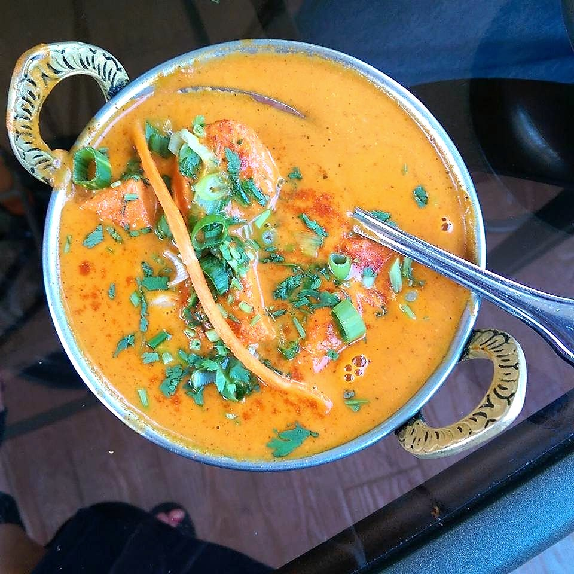

Contains: milk
Ingredients
Quantities for 4.
- 700g boneless thigh, cut into 4cm pieces Chicken
- 150g, thick Yogurt
- 600g, chopped Tomato
- 2, finely sliced Onion
- 80ml Cream
- 40g Butter
- 1 tbsp paste Ginger
- 1 tbsp paste Garlic
- 2 tsp Kashmiri Chilli
- 1.5 tsp Garam Masala
- 1 tsp Cumin Powder
- 1 tsp Coriander Powder
- 1/2 tsp Turmeric
- 1 tbsp, crushed Kasuri Methi
- a handful, chopped Coriander Leavesoptional
- 3 tbsp Neutral Oil
- to taste Salt
Cookware
stovetop, oven, kadhai, blender
Checked against the ingredient list for ten allergens: milk, egg, fish, crustaceans, tree nuts, peanuts, sesame, mustard, soy and gluten. Brands vary, so read the label on anything new to you.
Before you start
- The chicken is cooked separately over high heat until the edges char and it is just cooked through, then added to the gravy at the end. Simmering raw chicken in the sauce gives a different, flatter dish.
- The dish is British-Indian in origin and there is no single authentic version. What is consistent is charred tikka meeting a tomato-cream gravy.
Method
- Marinate the chicken in yogurt, half the ginger and garlic, the kashmiri chilli, turmeric and salt for at least 2 hours.
- Grill or roast it at 240C for 15 minutes until the edges catch. Set aside with any juices.Take the colour seriously here. It is the only smoke the dish gets.
- Fry the onion in oil over medium heat for 12 minutes until properly brown, not merely soft.This is where the sweetness comes from. Rushing it leaves the gravy thin.
- Add the remaining ginger and garlic, then the ground spices, and cook 1 minute.
- Add the tomato and a splash of water, cover and cook 15 minutes until it collapses. Blend smooth and return to the pan.
- Simmer with the butter until the fat separates, then add the chicken with its juices and cook 5 minutes.
- Stir in the cream, garam masala and crushed kasuri methi. Rest off the heat 5 minutes, then scatter the coriander.
Safe temperatures: Chicken and duck are done at 74°C / 165°F, taken at the thickest part and clear of the bone. Reheat leftovers to 74°C / 165°F. FoodSafety.gov
Storage
Keeps 3 days refrigerated and is better on day two. Reheat gently. Freeze without the cream and add it on reheating.
Nutrition Good estimate
High protein: 43 g a serving, 32% of the calories
| Per serving472 g | Per 100 g | |
|---|---|---|
| Calories | 540 kcal | 115 kcal |
| Protein | 42.9 g | 9 g |
| Carbohydrate | 18.9 g | 4 g |
| of which sugars | 8.9 g | 2 g |
| Fibre | 4.8 g | 1 g |
| Fat | 33.3 g | 7 g |
| of which saturated | 13.1 g | 3 g |
| of which unsaturated | 17.2 g | 4 g |
Ingredients given to taste count as zero, so the real figures run a little higher. Nearest database match used for garam masala. Estimated from raw ingredients using USDA FoodData Central.
More like this: Gluten-free Indian recipes · Punjabi recipes
Times, yields, allergens and nutrition are guidance. Use your own judgement on doneness and on storing. More in About.